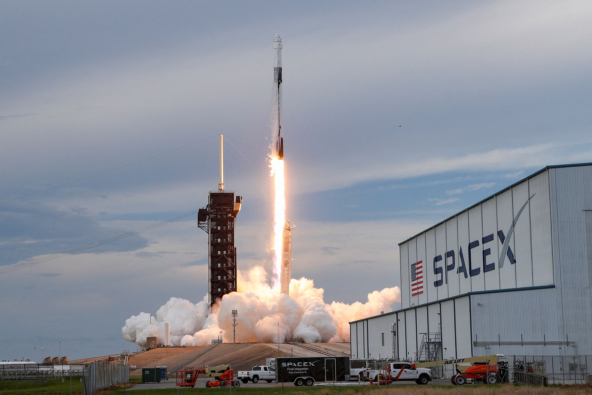

The Necessity and Promise of Space Exploration
The need to colonize space for human survival
The fundamental need for space exploration is more than just a scientific curiosity - it’s an existential necessity for human survival and the future of our species. Currently, humans are living in a limited space on Earth with limited resources, and the need to colonize the infinite resources beyond space is growing. In this context, space exploration is emerging as an essential option for human survival and development.
Earth is exposed to a variety of threats, including mass extinction, nuclear war, and asteroid strikes. Space exploration advocates, including Elon Musk, argue that becoming a “fortunate species” is not an option but a necessity to ensure humanity’s survival in the face of these risks. In particular, Earth’s limited resources and constant environmental threats are increasing the need to diversify our survival strategies through space exploration.
The many facets of space colonization
The importance of space exploration can be viewed in two main ways. First, the strategic benefits of securing the ‘Ultra Higher Ground’ and second, the scientific and technological benefits of space exploration. Space has become more than just an object of exploration, it has become an important area of national security and economic benefit.
Meanwhile, space development makes great contributions to a country’s scientific and technological advancement. The advanced technologies developed in the space industry are also applied in daily life, creating various spin-off effects. In the information age, the core technologies of modern society, such as information processing through satellites, autonomous vehicles, and large-capacity data communication, are derived from the space industry.
Balancing environmental responsibility
But there’s another way to look at space exploration. This is the view that just as important as developing and exploring space is our responsibility to all life on Earth. Humanity has developed at the expense of the Earth’s environment, and there is a growing consensus that we should not only aim to explore space, but also work to preserve and improve our current environment.
There is also the view that space exploration is necessary for the purpose of knowing our planet. As NASA researchers explain, “studying changes on Mars over thousands of years helps us predict past and future changes on Earth.” In this way, space exploration can provide a better understanding of Earth’s ecosystems and environment.
The economic value of mining space resources
Astronomical economic value
Space resource mining has the potential to revolutionize the human economy. According to an analysis by Goldman Sachs, a single asteroid the size of a football field could contain platinum worth about $50 billion (about $66 trillion). And that’s just an estimate for a single asteroid, with some studies suggesting that a single asteroid could contain up to $100 billion worth of minerals.
The Luxembourg Space Agency (LSA) has made an even bolder prediction: by 2045, the space resources industry could generate up to €170 billion (roughly $241 trillion) in revenue. As you can see, mining space resources actually has a huge economic value, which is one of the main reasons why countries are so keen to develop space.
Types of space resources and their utilization
The moon and asteroids have been found to be rich in a variety of resources, including iron, titanium, and rare earths. In particular, some experts have likened the resources on the moon to “the next oil and gas.” While these resources are becoming increasingly scarce or expensive to mine on Earth, they are relatively abundant in space.
In the future, a “space-to-space economy” is expected to develop, where resources in space are processed and utilized in space to create value. This shows the possibility of building a resource ecosystem for the space industry itself, not just mining for resources consumed on Earth.
Technical challenges and international norms
For space resource mining to become a reality, a number of technical challenges need to be addressed. Currently, logistical costs between Earth and space are high, and mining technologies in the space environment are still in their infancy. However, these challenges are being addressed rapidly as private companies are entering the space industry and competing to develop technologies.
Internationally, norms are forming around the mining of space resources. According to the 1967 Outer Space Treaty, the mining of space resources is subject to the free exploration and utilization by all nations, and space resources themselves are not subject to regulation. This provides a legal basis for the commercial exploitation of space resources, and countries are using it as a basis to formulate policies for space resource development.
Advances in long-distance space travel technology
Current propulsion technologies
A variety of technologies are being developed for long-distance space travel. One notable technology is the ‘solar sail’. These are fuel-free “space sailboats” that use a completely different propulsion method than chemical rockets. While there is still work to be done to scale up the craft for practical exploration, it is a promising alternative for long-distance space travel.
Another important technology is ‘swing-by’ technology. This uses the gravitational pull of a planet to speed up a spacecraft, making space exploration possible over long distances of hundreds of millions of kilometers. Long-range space probes like Voyager 1 were able to reach the outer reaches of the solar system by utilizing this technology.
Future technology possibilities
While hypersonic travel is more of a science fiction concept for now, space developers are exploring a variety of theoretical possibilities. While relativity prevents travel beyond the speed of light, science fiction uses concepts like wormholes and hyperspace travel to overcome the space-time constraints of space travel. In fact, some scientists are working on concepts that warp space-time, making faster-than-light travel theoretically possible.
Meanwhile, “hibernation” technologies are also being developed for long-distance space travel. Scientists have developed a technique that uses ultrasound to put organisms into a state of hibernation, which could have applications for astronauts on long-duration space travel. These technologies show that scenes often seen in science fiction movies could become a reality.
There are also innovative ideas that utilize laser technology. One of NASA’s top space frontier ideas involves using lasers to deliver energy to launch swarms of probes weighing less than a kilogram into the far reaches of space. These miniaturized probes hold the promise of exploring the far reaches of space more efficiently than traditional large spacecraft.
The future of space exploration
International collaboration and leadership
Space exploration is a huge undertaking that cannot be accomplished by any one country or company alone. Some argue that international leadership is needed to unite humanity. International cooperation, especially in space development, can spread costs and risks and combine diverse expertise for greater results.
In the past, the space industry has been dominated by military, security, and other state-led endeavors, with limited participation from private companies due to the enormous development costs. However, the paradigm of space development has recently shifted with the active participation of private companies such as SpaceX and Blue Origin. This shift is accelerating the pace of space development.
The role of artificial intelligence
Artificial intelligence technology is expected to revolutionize space exploration. In the future, AI technology will be reliable enough to drive spacecraft and carry out missions without any human intervention. This will greatly improve the efficiency and safety of space exploration.
Cutting-edge AI technologies can also contribute to solving problems related to survival in the space environment. AI will play a key role in managing resources in the complex space environment, operating life support systems, and responding to unexpected situations.
Sustainable space development
With the expansion of space development, sustainability considerations are also becoming important. Space debris issues, space environmental pollution, and overexploitation of space resources pose threats to long-term space activities. As a result, there is a growing discussion about environmentally responsible space development.
The Ministry of Science and ICT is laying a sustainable foundation for space development through the “Space Development Foundation Creation and Achievement Dissemination Project,” and is also establishing a long-term plan to secure key technologies for future space development through the “National Key Space Technology Development Roadmap.” These efforts play an important role in ensuring that space development goes beyond short-term achievements and contributes to long-term human development.
The economic impact of space resource development
The economic impact of space resource development extends beyond just resource extraction itself to a wide range of industries. Space development plays a particularly important role in improving a country’s industrial skills, as the technological nature of the space industry creates a wide range of spillover effects across all industries, which can be a key driver of national economic development.
Of particular note is that the space economy has a tail-wagging economic spillover effect. If countries and companies collaborate to tap into resources such as iron, titanium, and rare earths on the Moon, the economic impact could be significant. This economic potential has led to recent investments by private space companies and is changing the paradigm of space development.
Expanding private space development
The space industry, which was once led by the state, has recently entered a new phase with the active participation of private companies. In particular, the success of the third launch of the Nuri, which became an important milestone for Korea’s space industry technology and demonstrated the potential for private space industry growth.
Beyond mere economic benefits, private-led space development is contributing to accelerating the pace of technological innovation, reducing costs, and creating new business models. It is becoming an important factor in accelerating the realization of space resource development.